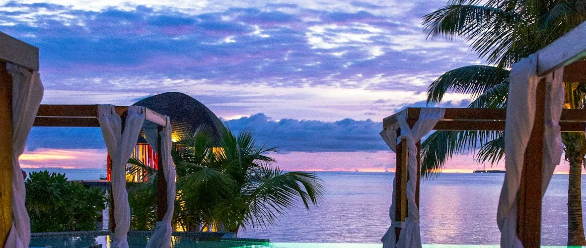
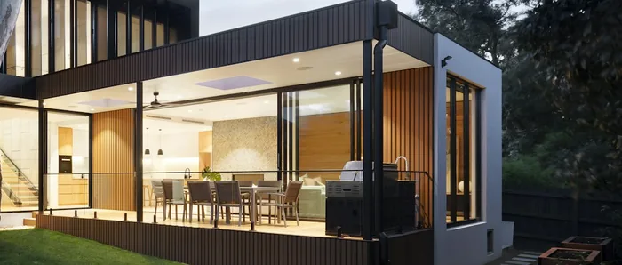

Outdoor living
Tiki Huts in South Florida
A tiki hut is a destination, not a cover. Built well and placed well, it changes where people go in the yard and how long they stay there.
The difference between shade and a destination
A pergola extends a space. You are still on the patio, just more comfortably. A tiki hut does something different: it creates somewhere to go. People walk out to it, and once they are under it they stay.
That is worth understanding before deciding which one you want, because it changes where it belongs. A structure meant to extend the house sits against the house. A structure meant to be a destination sits out in the yard, at the far end of the pool, in the corner nobody currently uses — somewhere that becomes a place because you built something there.
It also changes the brief. A destination wants seating, usually a counter, frequently light, and a reason to be where it is. Get those right and it becomes the part of the property that gets used most. Get them wrong and you have built an expensive umbrella.
Options
What people actually build them for
Four common briefs. Most projects are one of these with an element of another, and knowing which one you are is what sizes the structure.
Poolside shade
The most common. Set back from the water so it shades the loungers and the seating rather than the pool itself, giving somewhere to retreat to without going indoors. It is what makes a pool deck usable through the middle of the day.
Bar and entertaining
A counter with stools on the outside and a service side within. This is the configuration that turns a hut into the centre of a party, and it is the one most worth designing properly rather than adding a table later.
Covered seating
Lounge furniture under deep shade, positioned for a view or facing back at the house. Less about hosting, more about having somewhere genuinely comfortable outdoors in the afternoon.
Dining under cover
A table that can be used regardless of sun or a passing shower. It needs a larger footprint than people expect once chairs are pulled back, and a clear route from wherever food comes from.
Design considerations
Placement — the decision that cannot be revisited
A hut has a substantial footprint and footings to match. Where it goes is settled before anything else, and settled on site.
Distance from the water
Close enough to serve the pool, far enough that it is not shedding into it. A roof directly over water sends debris and run-off straight in and gives the filtration work it should not have. Set back from the coping, the hut shades the people rather than the pool — which is generally what was wanted. Footings also stay clear of the pool structure, which belongs to a licensed pool contractor.
Distance from the house
Far enough to be a destination, close enough that carrying things out is not a trek. If cooking happens under or near the hut, the route from the outdoor kitchen or the indoor one gets walked constantly and should be short and clear.
Where the sun is
A hut gives dense overhead shade, which handles high midday sun well and low afternoon sun less well. If the space faces west, where the low sun comes in almost horizontally, position and any side screening matter more than roof area. Worth checking in the yard at the hour that matters rather than assuming.
What it is seen against
A hut is a large object. From the house it either terminates a view deliberately or lands awkwardly in the middle of one. Standing at the kitchen window and at the main seating position before fixing the location is a five-minute exercise that avoids a permanent regret.
Things to establish before the position is fixed
Where does it sit relative to the coping? What is the route from where food and drink come from? Where is the sun at the hours you will use it? What does it block, and what does it frame, seen from indoors? Is there anything below ground where the footings would land?

Design considerations
Seating and bar layouts
The difference between a hut people gather in and one they walk through.
| Arrangement | How it works | Worth getting right |
|---|---|---|
| Bar counter, outward facing | Stools outside the structure, service side within. Guests sit in the sun or shade as they choose and the host stays under cover. | Room behind the stools for someone to pass. A bar with no circulation behind it becomes a wall of backs. |
| Bar counter, inward facing | Seating under the roof, everyone shaded. Better for long afternoons and for a hut used as the main gathering point. | A larger footprint, since both the seating and the circulation are inside the structure. |
| Open lounge | Sofa and chairs under cover, no counter. Quieter, more comfortable, easier to change later. | Furniture scaled to the footprint. Indoor-sized seating swallows a small hut entirely. |
| Dining | A table under the roof, used regardless of weather. | Chair pull-back on every side, plus clear posts. A post where a chair goes is a permanent irritation. |
Storage is the thing everyone forgets
Cushions, glassware, a cooler, seasonal fabric — all of it needs somewhere to live, or it gets carried back and forth and eventually the hut stops being used. Building storage into the counter or the structure costs little at the design stage and is awkward to add afterwards.
Options
Thatch: natural and synthetic
Both exist and they trade differently. Which is appropriate for your structure is settled at consultation, not declared in advance.
Natural thatch
The material character people picture when they imagine a tiki hut — texture, depth, and a roof that reads as genuinely handmade. It is a natural product, so it weathers, it varies, and it needs periodic attention. That is inherent to what it is rather than a fault in it.
Synthetic thatch
Manufactured to imitate the look with more consistency across the roof and a different upkeep profile. Appearance varies considerably between products, so it is worth seeing the specific material rather than a category.
What decides it
How exposed the position is, how much sun and rain the roof will take, how much airflow the structure gets, the look you are after, and — honestly — how much maintenance you want to take on. Those are project questions, not general ones.
What we will not tell you
A service life in years. It depends on the thatch type, the exposure, the airflow and the upkeep, and a number published on a web page would be a guess dressed up as a specification. You will get the upkeep requirement for what is actually proposed.
Being careful
Planning considerations
We will not tell you on a web page whether you need a permit
Requirements can vary by jurisdiction and project scope. Arco can discuss planning considerations for your specific project.
That is not evasion, it is the only honest answer. What applies depends on where the property is, what is being built, how large it is, where it sits on the plot and how it will be used. A blanket claim either way — that a structure like this does need a permit, or that it does not — would be a claim about your situation made by someone who has not seen it, and the consequences of it being wrong land on you rather than on us.
Raise it at the first conversation. It is worth doing early because the answer can shape the design rather than merely the paperwork.
Other approvals worth checking
Separately from any municipal requirement, an HOA or community association may have its own rules about structures, heights, positions, materials and appearance. Those are a different process with a different timeline, and they are worth starting early if they apply to your property.
Where a structure is near a pool, a boundary or an easement, position may be constrained by things unrelated to the structure itself. Establishing that at the site visit is part of why the position gets fixed before anything else.
Integration
Working with the rest of the yard
Footings before paving
A hut has a bigger footprint and a heavier roof than a pergola, so its supports need properly prepared ground below the surface. Formed while the ground is open, that is straightforward; retrofitted, it means lifting paving and relaying it.
The surface underneath
Whatever is under the hut is walked on wet, in bare feet, with drinks. It gets treated more like a pool surround than a patio, and the setting out wants to know where the posts land so cuts do not fall at the base of every one.
Next to the kitchen
Huts and outdoor kitchens are natural neighbours, but if cooking happens under the roof, how heat and smoke leave the structure becomes a design question rather than an afterthought.
Power and light
Most huts want lighting, and many want power at the bar. Electrical work is licensed separately in Florida, so supply is coordinated with the trade licensed for it and the route is planned before surrounding paving goes down.
Afterwards
Care and maintenance
A thatched roof is a maintained item, not a fitted one. Knowing what that means before you commit is part of choosing well.
Keep debris off it
Leaves and palm fronds landing on and in a roof hold moisture against it. A hut under trees needs clearing far more often than one in the open, which is a placement consideration as much as a maintenance one.
Airflow matters
A structure that dries out after rain behaves very differently from one that stays damp. Shade from trees, enclosure on multiple sides and low airflow all work against the roof.
Inspect periodically
Looking at the roof, the fixings and the base of the posts on a routine rather than reacting to a problem is what keeps small attention small. What to look for depends on the thatch type installed.
Storm season
Loose furniture, cushions and any fabric are seasonal items. Having somewhere planned for them to go beats improvising each time a warning comes through.
How it runs
Project workflow
Position first, planning considerations early, footings before anything gets paved over.
-
The brief
Which of the four applications this is — poolside shade, bar, lounge or dining — how many people it serves, and what it needs to hold. The footprint follows from that rather than from a standard size.
-
Position on site
Distance from the water and the house, where the sun is at the hours you will use it, what it frames or blocks seen from indoors, and what is below ground where the footings would land.
-
Planning considerations
Raised here rather than later. Requirements can vary by jurisdiction and project scope, and any HOA process is separate again — both are worth starting early, since either can shape the design.
-
Structure, thatch and layout
Roof type and thatch chosen for the exposure and the upkeep you want, and the internal arrangement — counter, seating, storage, lighting — resolved before construction rather than after.
-
Footings and surface
Supports formed in prepared ground, with any electrical route coordinated with the licensed trade, then the surrounding paving set out to positions already known.
-
Build and walkthrough
Structure erected and roofed, site cleared, then a walkthrough covering what upkeep the specific thatch installed will need and what to look for over time.
Related work
Shade structures and the spaces around them


Areas we serve
Tiki huts across South Florida
Common questions
Tiki hut questions we are asked most
Do I need a permit for a tiki hut?
Requirements can vary by jurisdiction and project scope. Arco can discuss planning considerations for your specific project. We are not going to tell you on a web page that a structure does or does not need a permit, because that answer depends on where you are, what is being built and how it is being used, and getting it wrong is your problem rather than ours. It is worth raising at the first conversation, since it can shape the design rather than just the paperwork, and an HOA may have separate requirements of its own.
Natural thatch or synthetic?
Both exist and they trade differently. Natural thatch gives the material character people picture when they imagine a tiki hut, and it is a natural product that weathers and needs periodic attention. Synthetic thatch is manufactured to imitate that look with more consistency and a different upkeep profile. Which is appropriate depends on the structure, the exposure of the position and how much maintenance you want to take on, so it is settled for your project at consultation rather than declared in advance.
How close to the pool should it go?
Close enough to serve the pool, far enough that it is not shedding into it. A roof directly over the water sends debris and run-off straight in, and gives the filtration work it should not have. Set back from the coping, a hut shades the loungers and the seating rather than the water, which is usually what people actually wanted. Footings also need to stay clear of the pool structure, which is a licensed pool contractor's territory.
Can it have a bar, power or lighting?
A bar counter with seating on the outside and a service side within is one of the most common configurations, and it is worth designing rather than adding. Power and lighting are frequently wanted too. Electrical work is licensed separately in Florida, so any supply is coordinated with the trade licensed for it, and the route is planned before surrounding paving goes down. Which elements are performed directly and which are coordinated is set out in your written proposal.
How long does a thatched roof last?
We are not going to publish a number. Service life depends on the thatch type, how exposed the position is, how much sun and rain it takes, how well air moves through the structure and whether it is maintained. A hut under trees that stays damp behaves differently from one in the open. What we can do is tell you what the upkeep involves for the type being proposed, so you know what you are taking on before you commit.
Can a tiki hut be added to a patio that already exists?
Usually, though the footings are the question rather than the structure. A tiki hut has a larger footprint and a heavier roof than a pergola, so its supports need properly prepared ground beneath the surface, which generally means lifting sections of paving, forming the footings and relaying. Straightforward when planned for. It is also the reason to mention a hut before a new patio is laid, when allowing for it costs very little.
Start with where it goes
Position is the decision you cannot revisit, and it is settled standing in the yard. Book a free on-site visit and we will work it out together, planning considerations included.